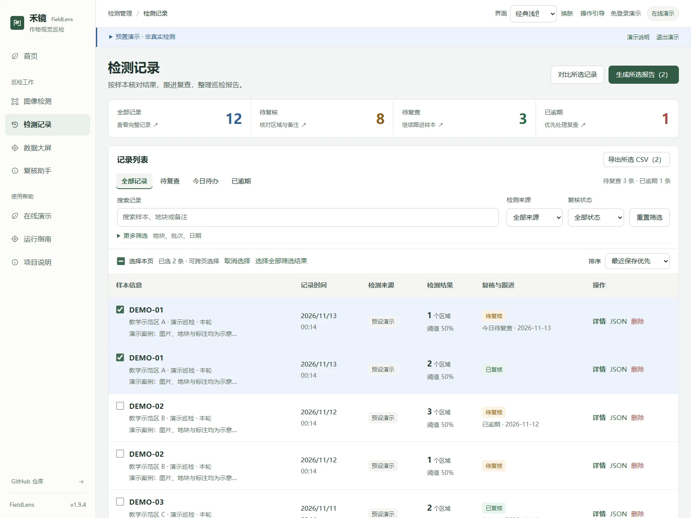
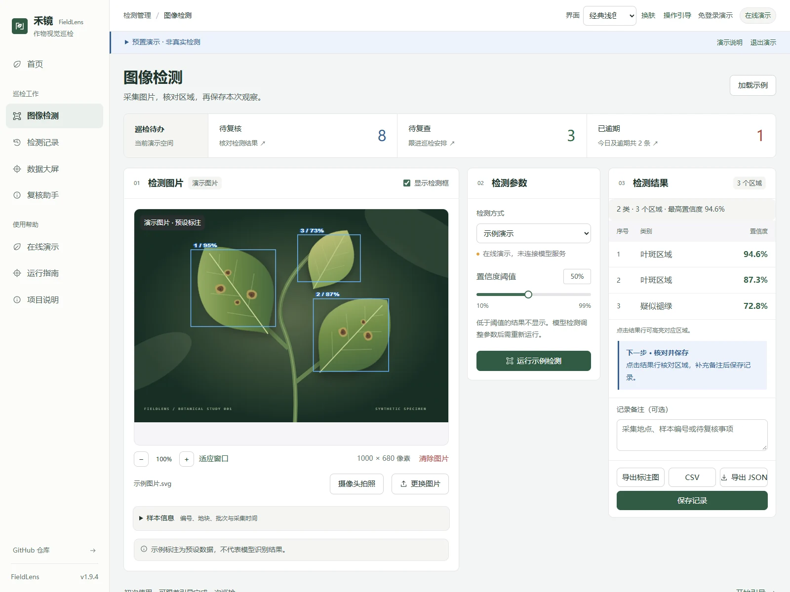
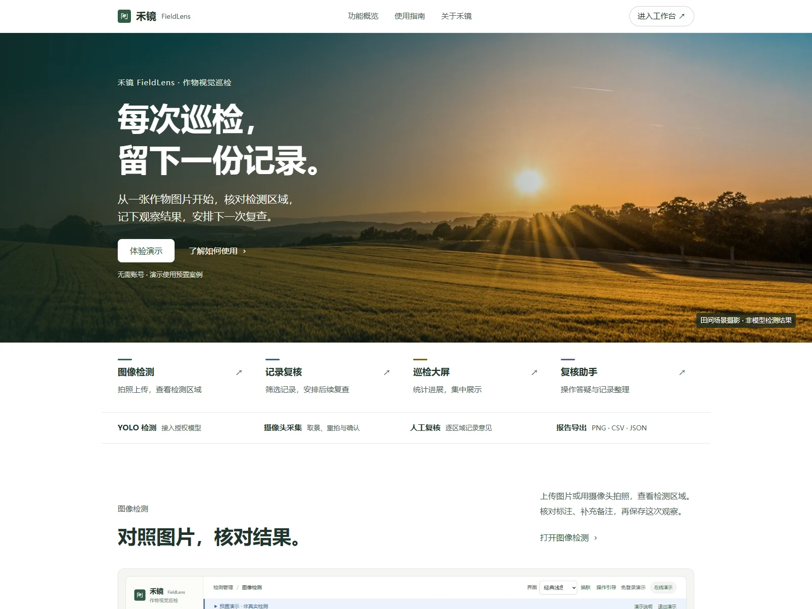
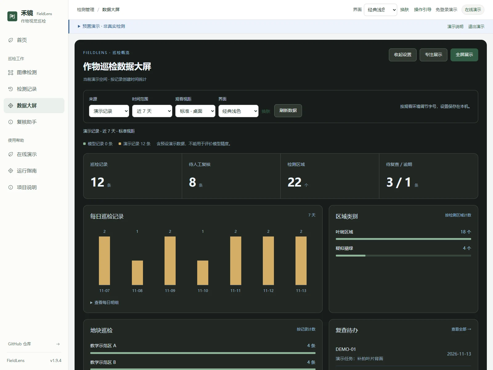

操作答疑内置帮助
搜索拍照、检测、复核、报告和平台接入说明，直接跳转到对应功能。手机打开后即可搜索。

01 / 从一张图片开始
无需账号或密码。演示操作在当前标签页暂存，可重置；退出演示后恢复本机记录。
打开预置案例，调整阈值、放大图片，检查每个检测框，再保存结果。
进入检测工作台 →逐区域填写意见，补充地块、批次和复查时间；对比两条记录，整理巡检报告。
查看检测记录 →按时间和来源筛选记录，在大屏查看趋势与待复查任务，或把报告打印为 PDF。
打开演示大屏 →在线版使用预置数据，不执行真实 YOLO 推理或平台 AI 请求。自己的照片可以预览；识别自己的图片需要部署模型服务。
02 / 界面与内容
保留正文 16px、主要操作 15px 和多色状态。本轮集中处理多标签页复核、手机翻页与异常请求，让关键操作有明确反馈。

参考大疆农业的场景表达、Linear 的筛选反馈与 Ant Design 的表格选择交互，独立实现界面。保留浅色、青绿、深色、暖砂和跟随系统设置。
04 / 采集与展示
拍照、换肤、大屏和账号入口继续保留，按不同使用环境选择。


05 / 开始使用前
在线演示适合了解流程。使用自己的图片、账号和平台，需要完成相应部署。
不需要。公开演示使用 12 条预置案例，修改仅在当前标签页暂存，支持重置与退出。页面不收集登录密码，也不提供公共 AI 平台密钥。
真实工作空间的记录按账号分组保存在当前浏览器，不自动跨设备同步。多标签页更新提示不等于数据库并发锁。最多保存 30 条，满额后停止新增，保留旧记录。可以导出 JSON 备份，再到其他设备导入；备份不含原图与模型权重。复查提醒仅在打开页面时显示。
v1.9.4 已通过 34 项前端单元测试、21 项后端测试、生产构建和浏览器业务回归。新增检查覆盖跨标签页更新与删除、草稿导出和重新读取、手机分页，以及登录和 AI 请求的迟到响应。真实账号测试使用临时本地后端；小屏与主题检查来自 Chrome 浏览器视口，未作实体手机测量。
摄像头流程采用合成媒体测试，平台请求采用模拟响应；实体相机、真实付费 AI 调用、模型精度与田间效果尚未实测。复核状态不等于病害确诊。
前端使用原生 ES Modules、Vite 与 Canvas；本地服务使用 Flask、Pillow 与可选 Ultralytics YOLO，SQLite 保存账号和会话。源码按仓库 AGPL-3.0 许可提供，原始来源与素材归属见仓库说明；界面参考未复制相关品牌代码、标识或字体文件。
Capture images, review detection regions, keep follow-up records and prepare reports. The public demo offers twelve preset cases without an account. Version 1.9.4 protects open review drafts when another tab updates a record, moves mobile pagination to the new list, and handles login errors and cancelled requests. Camera capture, four themes, reports and optional AI provider access remain available. The review assistant combines built-in help, local rule-based checklists and optional AI provider access. Real authentication, YOLO inference and provider requests require a deployed backend. Inspection records stay in the browser; no model accuracy or field performance claims are made.